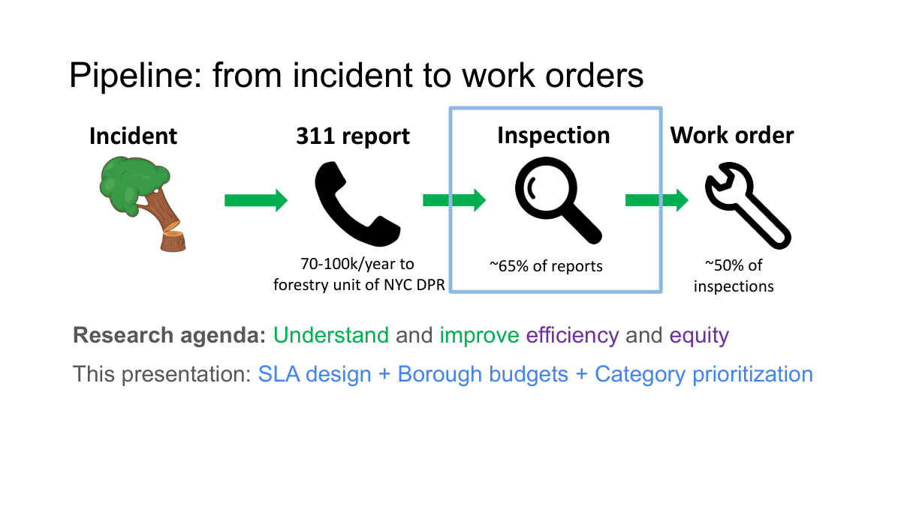
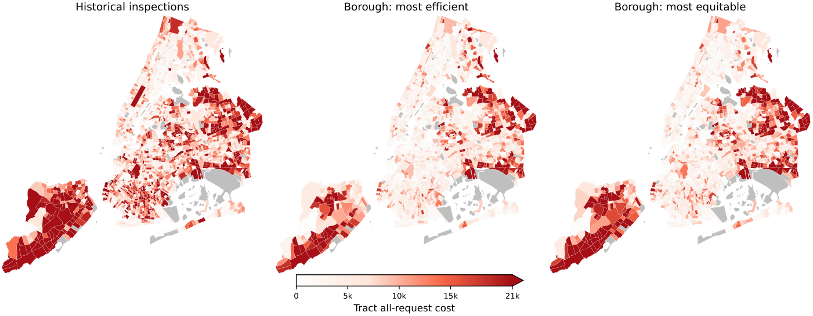

The paper's theoretical statements on SLA design (price of equity, centralization gains) are formalized in Lean via the AppliedModelingLib project, with a public repository.
Abstract
We study how government should allocate resources (e.g., maintenance of public infrastructure) over time, efficiently and equitably – when these desiderata may conflict. In particular, we consider the design of Service Level Agreements (SLAs) in city government operations: promises that incidents such as potholes and fallen trees will be responded to within a certain time. We model the problem of designing a set of SLAs as an optimization problem with equity and efficiency objectives under a queueing framework; the city has two decision levers: how to allocate response budgets to different neighborhoods, and how to schedule responses to individual incidents. We first theoretically analyze a stylized model, deriving when the equity-efficiency trade-off is substantial in absolute terms and centralizing response efforts leads to relatively smaller improvements over optimal decentralized operations. We then develop a simulation-optimization framework to design and analyze policies in practice. Applying our framework to data from NYC, we find: (a) in practice, despite large potential trade-offs, equity improvements are possible with relatively small decreases in efficiency; (b) there exist policies that are both more efficient and equitable than status quo inspections; (c) the gain from centralization is {relatively small compared to the potential efficiency-equity tradeoff}. Our results provide widely applicable predictions about the scale of the equity-efficiency trade-off in similar resource allocation settings, and our data-driven simulation-optimization framework enables specific policy recommendations in government operations. Our code is available at https://github.com/nikhgarg/sla_design. Our theoretical statements have been formalized in Lean, available at https://github.com/nikhgarg/AppliedModelingLib/blob/main/papers/LG24ServiceLevelAgreements/.
Problem
City agencies promise Service Level Agreements (SLAs) for incident response, such as potholes or fallen trees. They need SLA designs and resource allocations that balance efficiency against equity across neighborhoods.
Approach
SLA design is modeled as a queueing-based optimization problem with two levers: per-borough budgets and incident-category prioritization. A stylized model is analyzed theoretically to characterize the equity-efficiency trade-off (price of equity) and the gain from centralization, and these theoretical statements are formalized in Lean. A simulation-optimization framework using qNEHVI Bayesian optimization is then applied to NYC Parks 311 inspection data.

(a) Research questions
Results
On NYC data, equity can be improved with small efficiency losses, and some policies are both more efficient and more equitable than historical inspections. The gain from centralization is small relative to the equity-efficiency trade-off, and the frontier policies hold up on out-of-sample data.

Figure 2 : Cost borne by each census tract under three different inspection policies: (a) historical inspections, (b) the most efficient Borough budget policy, and (c) the most equitable Borough budget policy, evaluated on data from 2019. Instead of evaluating \widehat{\pi}_{k,b} (fraction of inspected incidents) and \hat{z}_{k,b} (median of inspection delays) for each Borough b , we evaluate them